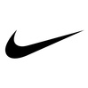
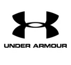

El argentino Manu Ginóbili entró en el Olimpo de su deporte al ser incluido formalmente en el Salón de la Fama del Baloncesto de Naismith en Springfield..
Facundo Campazzo, figura del seleccionado argentino de básquet, arribó en las últimas horas a la ciudad de Dallas para firmar próximamente el contrato que..
Hace tiempo que la NBA intenta limitar a jugadores como Trae Young, James Harden y Luka Doncic para que dejen de explotar las reglas, que son muy favorables para los ofensivos..